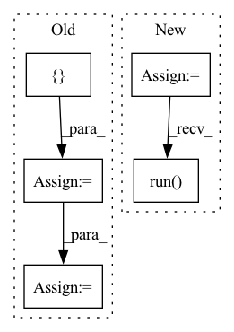

Pattern ID :21316
Before Change
conv_bn_pairs, bn_conv_pairs = fold_all_batch_norms_to_weight(model.model)
bn_dict = {}
convs = []
for conv_bn in conv_bn_pairs:
bn_dict[conv_bn[0].name] = conv_bn[1]
convs.append(conv_bn[0])
bias1 = copy.deepcopy(numpy_helper.to_array(ParamUtils.get_param(model.model, convs[1], BIAS_INDEX)))
cls = CrossLayerScaling(model)
cls_set_info = cls.scale_model()
hbf = HighBiasFold(model)After Change
hbf = HighBiasFold(model_onnx)
hbf.bias_fold(cls_set_info, bn_dict)
session = _build_session(model_onnx)
output_after_hbf_onnx = session.run( None, {"input": test_data})
assert np.allclose(output_after_hbf_onnx, cle_out.detach().numpy(), rtol=1e-2)
def _build_session(model):In pattern: SUPERPATTERN
Frequency: 3
Non-data size: 5
Instances Fragment ID: 68119468
Project Name: quic/aimet
Commit Name: 561eb0f70f1b9a8b5f8efbe82ff66c5da5dbe4cb
Time: 2023-04-26
Author: 63610745+quic-mangal@users.noreply.github.com
File Name: TrainingExtensions/onnx/test/python/test_cross_layer_equalization.py
M Class Name: TestHighBiasFold
N Class Name: TestHighBiasFold
M Method Name: test_find_high_bias_fold(1)
N Method Name: test_find_high_bias_fold(1)
M Parent Class:
N Parent Class:
M File Name: TrainingExtensions/onnx/test/python/test_cross_layer_equalization.py
N File Name: TrainingExtensions/onnx/test/python/test_cross_layer_equalization.py
M Start Line: 183
M End Line: 199
N Start Line: 194
N End Line: 220
Before Change
def test_surface_native_error():
cmd = [ "python3", utils.fixtures_path("tf_keras_runtime_error.py") = p.stderr.read()
assert p.wait() != 0
if tf.executing_eagerly():
assert (After Change
yield from trainer.send(steps=10, validation_freq=10)
training_metrics, validation_metrics = trainer.result()
controller = utils.make_trial_controller_from_trial_implementation(
tf_keras_runtime_error.RuntimeErrorTrial,
{"global_batch_size": 1},
make_workloads(),
trial_seed=0,
)
with pytest.raises(ValueError, match="incompatible"):
controller.run()
Fragment ID: 68119466
Project Name: determined-ai/determined
Commit Name: e7f3289627bda514dc6e70183def0a8ee282f327
Time: 2022-05-03
Author: rb@hpe.com
File Name: harness/tests/experiment/keras/test_tf_keras_trial.py
M Class Name: AnonimousClass
N Class Name: AnonimousClass
M Method Name: test_surface_native_error(0)
N Method Name: test_surface_native_error(0)
M Parent Class:
N Parent Class:
M File Name: harness/tests/experiment/keras/test_tf_keras_trial.py
N File Name: harness/tests/experiment/keras/test_tf_keras_trial.py
M Start Line: 373
M End Line: 390
N Start Line: 379
N End Line: 386
Before Change
// Put data to gpu
data, mask = data.to(device=device), mask.to(device=device)
targets = []
for item in bboxes:
target = {
"boxes": item[0].to(dtype=torch.float, device=device),
"labels": torch.tensor(item[1]).to(device=device)
}
targets.append(target)
// Make prediction
out = model(data, mask)
loss = criterion(out, targets)
loss.backward()
After Change
optim = torch.optim.AdamW(
param_dicts, lr=float(config["training"]["lr"]), weight_decay=float(config["training"]["weight_decay"])
)
scheduler = torch.optim.lr_scheduler.StepLR(optim, config["training"]["lr_drop"])
// Build trainer and start training
trainer = Trainer(
train_loader, val_loader, model, criterion, optim, scheduler, device, config
)
trainer.run()
if __name__ == "__main__":
torch.manual_seed(10) Fragment ID: 68119462
Project Name: bwittmann/transoar
Commit Name: fbe1515fe14ebf81c18bcf86c27bd7cb4ac79e7e
Time: 2021-11-22
Author: bastian.wittmann@tum.de
File Name: scripts/train.py
M Class Name: AnonimousClass
N Class Name: AnonimousClass
M Method Name: train(1)
N Method Name: train(1)
M Parent Class:
N Parent Class:
M File Name: scripts/train.py
N File Name: scripts/train.py
M Start Line: 15
M End Line: 42
N Start Line: 15
N End Line: 41